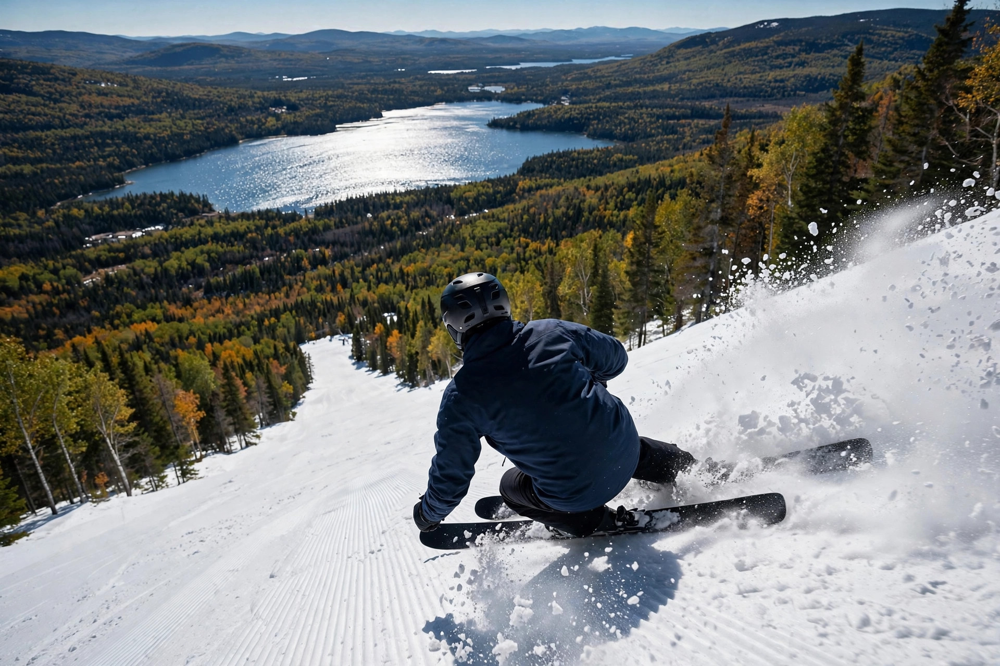

Ski Hills & Resorts
Cold, reliable snow, lift tickets that cost less than out west, and a hill for every style — here are the ten that matter.

Quebec is the east's ski capital — not because of any single monster mountain, but because of depth: a dozen legitimate resorts within a few hours of the cities, snow you can count on from December to April, and a ski culture that runs in French. The big three (Tremblant, Le Massif, Sainte-Anne) anchor it; the rest fill every niche around them.
Mont-Tremblant
Laurentians · 645 m vertical · The flagship
The biggest resort in the Laurentians and Quebec's most complete ski destination — the most terrain, the most lifts, and a genuine pedestrian village at the base with restaurants and après-ski. About 90 minutes from Montreal, which means busy weekends; go midweek or stay over and ski the quiet first hour.
Le Massif de Charlevoix
Charlevoix · 770 m vertical · The view
The highest vertical in Eastern Canada, and the runs drop toward the St. Lawrence — on a clear day you're skiing straight at the river. Big, steep, and serious, with a Club Med village at the base these days. Combine it with Baie-Saint-Paul (see our Charlevoix guide) for the full trip.
Mont-Sainte-Anne
Near Quebec City · 625 m vertical · The locals' mountain
Ask Quebec City skiers where they go and most say Sainte-Anne. Three faces, huge variety from cruisers to genuinely steep pitches, and a fraction of Tremblant's crowds. Thirty minutes from the city — the easiest big-mountain day trip in the province.
Stoneham
Near Quebec City · 593 m vertical · The night owl
Stoneham's calling card is night skiing on real vertical — one of the biggest lit ski areas in Canada. Twenty minutes from Quebec City, it's the after-work hill that skis like a weekend hill. The terrain park scene is strong here too.
Mont-Orford
Eastern Townships · 589 m vertical · The park setting
A proper mountain wrapped in a SEPAQ national park, with three summits and views over Lac Memphrémagog. Orford skis bigger than its numbers — long fall-line runs, good glades — and the Townships' food-and-drink scene is right there for the evening.
Sutton
Eastern Townships · 460 m vertical · The soul
The anti-resort: famous for its glades, its old-school vibe, and a loyal following that treats it like a private club. Less vertical than the big names, more character than all of them. If you ski trees, this is your hill.
Bromont
Eastern Townships · ~385 m vertical · The night-skiing capital
The closest big hill to Montreal, and the undisputed capital of night skiing — an enormous lit trail network that keeps the season alive after dark. Seven sides, something for everyone, and the easiest logistics in the province: ski, drive home, sleep in your own bed.
Mont Blanc
Laurentians · The family favourite
Saint-Faustin-Lac-Carré's hill has been the Laurentians' family mountain for generations — friendly, unpretentious, and a fraction of Tremblant's prices, with the same reliable Laurentian snow. The place locals actually learned to ski.
Val Saint-Côme
Lanaudière · The value pick
Lanaudière's home hill flies under the radar — family-friendly terrain, honest prices, and none of the Laurentian weekend crush. An easy day trip from Montreal or Joliette that skis much better than its low profile suggests.
Mont Grand-Fonds
Charlevoix · The quiet one
Tucked into the Charlevoix backcountry, Grand-Fonds is the connoisseur's pick: deep natural snow, empty slopes, and a throwback feel. It's not the biggest hill on this list, but on a powder day after a storm, there's nowhere in Quebec you'd rather be.
Ski practicalities
- Season: typically late November/December through early-to-mid April; the Laurentians and Charlevoix hold snow longest.
- Cold: -20°C days happen. Dress for it — Quebec skiing rewards the well-layered and punishes the optimistic.
- Tickets: lift tickets run noticeably cheaper than Whistler or Banff; multi-day and midweek deals are common.
- Language: it's a French ski culture — lessons, signage, and lift-line chatter. Most resorts are fully bilingual for visitors.
- Beyond the resorts: the Chic-Chocs in the Gaspésie are the backcountry capital — guided only unless you have avalanche skills.
For the rest of the wild side — hiking, waterfalls, whales — see our Quebec Outdoors guide and the Adventure hub.